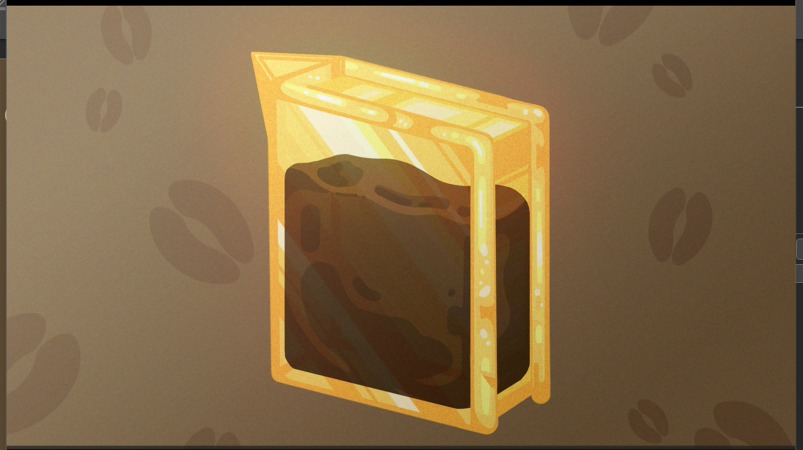
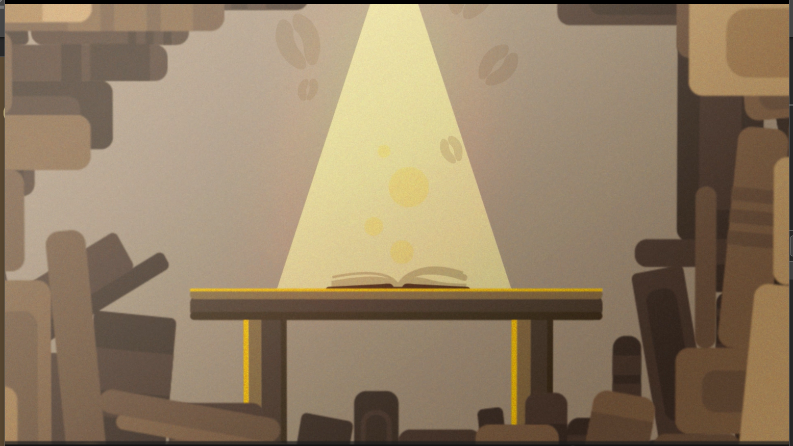

''커피랑 도서관 홍보 모션그래픽''
''커피랑 도서관 홍보 모션그래픽''
전체적으로 브라운 톤을 이용해 차분한 분위기를 연출하고, 노란빛 표현을 통해
전반적으로 편안하고 포근한 분위기를 연출했습니다.
책에서 연기가 피어오르고 책이 주전자로
변하면서 커피가 따라지는 연출로
책과 커피가 자연스럽게 연결되는 색다른 연출을 시도했습니다.
커피랑 도서관이라는 브랜드가 가진 아이덴티티를 최대한 담으려 한 모션그래픽 영상입니다.
|  | 가장 신경 쓴 부분 중 하나입니다. 책이 투명해지면서 |
책이 여러 개 겹쳐진 모습으로 도서관이라는 것을 강조하며서 |
 |